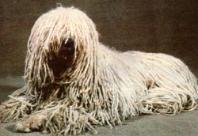
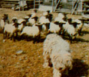
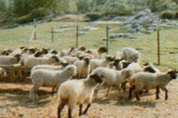

Here's a "shaggy dog story" that could have a happy ending for livestock owners who are plagued with predator problems.
We've all heard the phrase "a wolf in sheep's clothing", but-not long ago-I encountered a dog in sheep's clothing! The first time I saw a Komondor, I could scarcely believe my eyes: The canine-which was covered with long, white, matted hair- did look remarkably like an overgrown ewe. In fact, as I watched it, the animal even acted like a sheep . . . since it moved along quietly with the flock, keeping its head down in what appeared to be a grazing position.
However, Komondors don't for a moment imagine that they're sheep. Instead, as a result of centuries of breeding and in-born instinct, the dogs guard "their" flocks against predators. Since the breed's introduction to North America from its native Hungary just a few years back, Komondors have helped sheep ranchers in both Canada and the United States to reduce-dramatically-losses to marauding carnivores.
Predators probably pose the greatest single threat to a sheep raiser's livelihood. Wolves, coyotes, coydogs, roaming domestic canines, and-in remoter areas-even bears have been known to take a devastating toll in the course of just one night's attack on a flock. Furthermore, if such slaughter continues unchecked, predation can actually put a small-scale sheep operation right out of business!
The traditional methods of dealing with the problem-shooting, trapping, "denning" (killing newborn coyote pups in the den), and using poisons or electric fences-seem to be only marginally effective and have received, in many cases deservedly, a lot of criticism. Shooting and trapping are, at best, only temporary measures because of the sheer impossibility of eliminating the bulk of the predatory animals in a given area . . . while environmentalists are concerned about the danger of poisons to other forms of wildlife, and disapprove of the inhumane practice of denning. Fencing can offer some protection against predators, of course, but it's doubtful whether there exists a barrier strong enough and high enough to repel a really determined invader.
In the face of such a dilemma, many sheep raisers have rediscovered the traditional Old World method of protecting flocks: guard dogs. Unlike the more common sheep-herding breeds, guard canines don't try to move their charges . . . they simply live with the flock-24 hours a day-and drive off any attackers that may approach. Middle European shepherds have relied on the vigilant animals for centuries . . . and some of the best breeds from Hungary, Yugoslavia, Russia, Italy, and Turkey are now being imported for "trial assignments" in this hemisphere. So far, one of the most highly rated of the "immigrant" dogs is the shaggy-coated Komondor.
Canadians Tom and Joan Red-path are representative of the modern shepherds who have happily "employed" Komondors as protection for their flocks. The couple's 300-acre farm, located at the edge of the bush country about 50 miles northwest of Ottawa, has been a full-time sheep-raising concern for over three years. From their very first week of operation, the Redpaths were faced with the problem of stock being killed by packs of wild dogs and wolves.
Well, after hearing from other sheep farmers-folks who were already satisfied guard dog owners-the Red-paths acquired Pandy, a female Komondor. Once Pandy was put to work, her owners were amazed-and delighted-to find that the sheep slaughter immediately stopped . . . and they haven't lost a single member of their flock to predators since the dog's arrival.
How does the couple account for this "miraculous" turn of events? It's quite simple, Joan Redpath explains: "A Komondor has a very strong protective instinct. It'll defend whatever livestock it's with, as long as the animals are inside its territory. In fact, the guard dogs have been known to look after goats, horses, and even chickens."
However, the dogs' instinct alone isn't enough to make them good guardians . . . in fact, turning a puppy loose with sheep and expecting it to guard them right away is inviting disaster. An untrained (or improperly trained) Komondor can-as a result of its size and speed-be a danger to the flock, and even to its human masters. The dogs have an acute sense of territory, you see, and a strong urge to attack all intruders. If the puppy isn't allowed to become accustom-edquite early-to living with its charges, it could view the sheep as invaders.
Obviously, a thorough training program is crucial to the development of an efficient guard dog. When the Redpaths received their three-month-old pup, they immediately took her to the barn to "introduce" her to the sheep . . . and she was left there to eat and sleep with the flock. (Since this bond between dog and sheep is so critical, some breeders even encourage young pups to suckle nursing ewes.)
The next stage in a Komondor's education is to develop and refine the animal's inherent territorial instinct . . . and this is done by familiarizing the dog with the pasture where it will work. Twice daily, for a number of weeks, Joan walked Pandy around the boundary of the field. Occasionally, Pandy was instructed to remain out in the pasture while Joan returned to the house . . . and, in that way, the animal gradually learned that her task was to stay in the field with the sheep.
Another important aspect of the Komondor's training is socialization. When they're mature, the dogs tend to be somewhat aloof and suspicious of strangers . . . so it's important that a Komondor-from puppyhood-have frequent contact with a variety of people. After all, you don't want a dog that will attack anything or anyone happening to stray into its territory . . . including your neighbors and friends! Therefore, a canine sentinel has to be taught-by the example of the trainer-to distinguish between friend and foe.
Although the Komondor is an intelligent creature and eager to please the people it loves, there'll be occasional lapses or mistakes during the training process, and some form of correction must be applied in such cases. Physical punishment, however-hitting the dog on the muzzle, for instance-is not recommended. Most Komondor owners agree that this breed doesn't respond well to such conditioning, and may even turn on the trainer. Fortunately, the Komondor-like most domesticated animals-does respond readily to more subtle forms of discipline. When they need to rebuke Pandy, the Redpaths grasp her head firmly-just under the ears-and shake it back and forth several times, while repeating "No!" in a stern tone of voice. Once it has learned its mission, however, a Komondor will be just about unsurpassed in its ability to protect a flock. The dog will not hesitate to react swiftly if it thinks the sheep are being threatened . . . and its impressive speed (a Komondor can easily outrun a coyote or wolf) and courage insure that the canine guardian will almost always emerge as the victor in a conflict with a marauding predator. Therefore, intruders soon learn to be wary of crossing the invisible line that separates the watchdog and its charges from the rest of the world.
An adult Komondor is a physically imposing dog: A full-grown male will stand upward of 25-1/2 inches at the shoulder, and can weigh as much as 120 pounds. However, in my opinion, the Komondor's coat is its most striking feature. This is no street-variety "shaggy dog"! What might appear (to the untrained eye) as unkempt mats of hair are actually called "cords" . . . and they have several important functions. In addition to repelling rain and snow, the dangling, furry "ropes" further protect the animal by acting as a thick armor against the sharp teeth of an attacker.
Maintaining that unusual coat is no easy matter, however. The dogs are particularly difficult to bathe and dry, and grooming, therefore, requires a lot of patience and persistence on the part of the owner. Joan remembers one especially arduous session with Pandy: Only after a six-hour workover with a tangle splitter, brush, and comb did the animal's coat finally assume its characteristic appearance of controlled disarray!
Despite the extra effort involved in training and caring for a Komondor, the Redpaths pronounce themselves completely satisfied after the first three years with their guard dog. Even though Pandy still occasionally leaves her post to return to the house, she is doing her job in her own way: The Redpath flock has remained unharmed since Pandy's arrival, while sheep farmers in the area who use noncanine defense measures continue to suffer losses. "Many a night," says Joan, "I've been awakened from a dead sleep to hear Pandy bulleting down the field, barking and keeping the predators back.
"She's worth the price of my entire flock," Pandy's owner declares . . . and that's a mighty good endorsement for the Komondor!
EDITOR'S NOTE: While a Komondor can indeed be an amazingly efficient "sheep patrol", the dogs aren't inexpensive: Well-bred, registered Komondors start at $400. Nor are they terribly easy to obtain, . . . only about 30 registered litters are produced in the U.S. each year. However, if you're interested in the breed, you can contact the official Komondor organization for free information and a list of breeders. (You may also want to subscribe to the society's official bi-monthly newsletter, Komondor News . . . which is available-for $12 annually in the U. S. or $14 in Canada or Mexico-frorn the same address.) Write to Middle Atlantic States Komondor Club, Dept. TMEN, 102 Russell Road, Princeton, New Jersey 08540 . . . and please enclose a dollar or two to cover the expenses of the information packet they'll send you.
|
 |
 |
 |